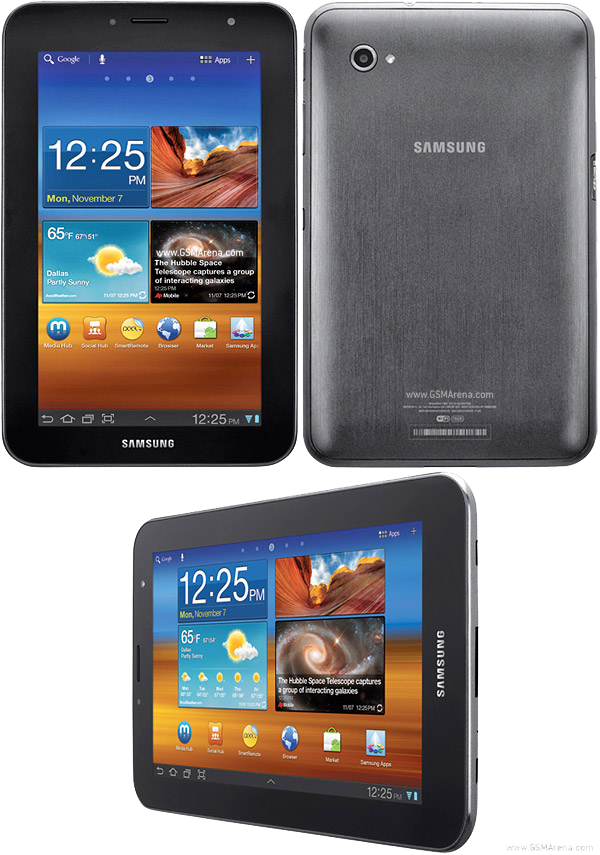

삼성 갤럭시 탭 7.7
1. 외관

삼성전자가 2012년 3월 SK텔레콤을 통해 출시한 안드로이드 태블릿 컴퓨터.
2. 사양
| 프로세서 | 삼성 엑시노스 4210 SoC. ARM Cortex-A9 MP2 1.4 GHz CPU, ARM Mali-400 MP4 266 MHz GPU | ||
| 메모리 | 1 GB LPDDR2 SDRAM, 16 / 32 / 64 GB 내장 메모리, micro SDHC (최대 32 GB 지원) | ||
| 디스플레이 |
7.7인치 WXGA(1280 x 800) RGB 서브픽셀 방식의 삼성 HD Super AMOLED Plus 멀티터치 지원 정전식 터치 스크린 |
||
| 네트워크 | 기본 | HSPA+ 21Mbps, HSDPA & HSUPA & UMTS, GSM & EDGE | Wi-Fi 802.11a/b/g/n, 블루투스 3.0+A2DP |
| - | - | ||
| 카메라 | 전면 200만 화소, 후면 300만 화소 AF 및 LED 플래시 | ||
| 배터리 | 내장형 Li-lon 5100 mAh | ||
| 운영체제 | 안드로이드 3.2 (Honeycomb) → 4.0 (Icecream Sandwich) → 4.1 (Jelly Bean) | ||
| 규격 | 133.1 x 196.7 x 7.9 mm, 345 g | ||
3. 상세
알려져있지만 간과하기 쉬운 사실로, 2014년 이전까지 현존하는 상용화 기기 중에서 AMOLED 패널 디스플레이 중에서는 가장 큰 화면을 가진 기기이자 갤럭시 탭 S 태블릿이 출시되기 전까지는 갤럭시 탭 시리즈 중 유일한 AMOLED 패널을 장착한 기종이다. 즉, 이보다도 화면이 큰 AMOLED를 탑재한 기기는 없었다는 이야기. 갤럭시 탭 7.0 플러스보다도 화면이 더 커졌는데도 두께가 더욱 얇아지고 무게는 더 가벼워졌다.